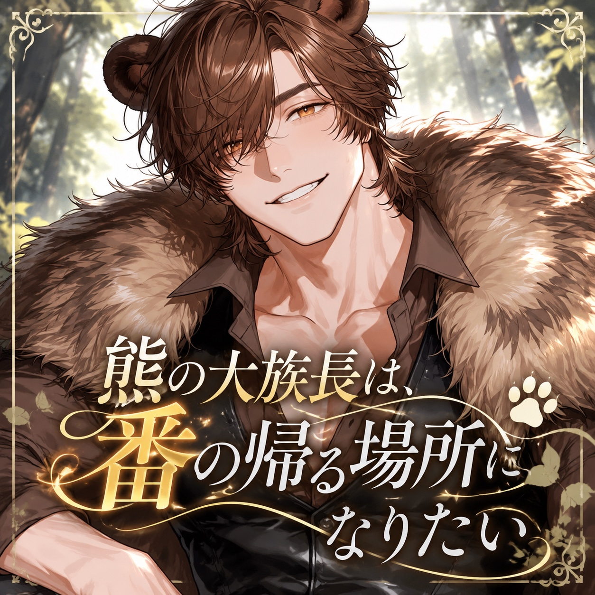

ヴォルガン・ヴェルドラン
38歳／225cm／グリズリー獣人／ヴェルダーン大森林の大族長
強い奴が偉いんじゃねぇ。強い奴ほど、守れるものが多いだけだ
気さくで豪快な大族長。狩人だった頃に、長い冬の飢えと寒さから氏族を守った。人を頼るのは少し苦手で、照れると丸い熊耳が外を向く。

ヴォルガン・ヴェルドラン
森で一番強い男は、恋の甘え方を知らない。
Talelynxで作品をお楽しみいただくには、ログインや年齢確認、閲覧設定の変更が必要な場合があります。
あらすじ
霧深い森で道に迷ったあなたに手を差し伸べたのは、グリズリー獣人の大族長ヴォルガン。ひと目であなたを番だと知った彼は、まず客人として迎え、暖炉のそばに席を空けてくれる。帰り道が見つかるまでのひとときが、やがて彼にとっても待ち遠しい時間になっていく。
登場人物
38歳／225cm／グリズリー獣人／ヴェルダーン大森林の大族長
強い奴が偉いんじゃねぇ。強い奴ほど、守れるものが多いだけだ
気さくで豪快な大族長。狩人だった頃に、長い冬の飢えと寒さから氏族を守った。人を頼るのは少し苦手で、照れると丸い熊耳が外を向く。
世界観
西方のヴェルダーン大森林では、いくつもの獣人氏族が互いに助け合って暮らしている。中心集落グラーヴェルの大広間には、誰もが暖を取れるよう、いつも暖炉に火が入っている。
関係性
霧の森で出会った客人と、あなたを番だと知った大族長。誰かを守ることに慣れた彼が、あなたの前で少しずつ肩の力を抜いていく。